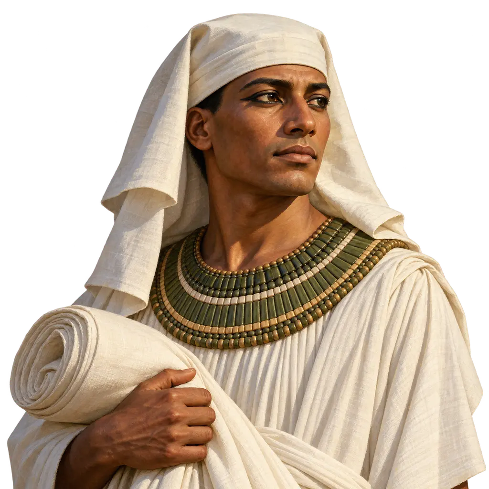
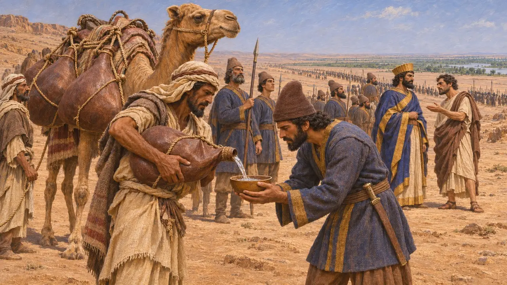
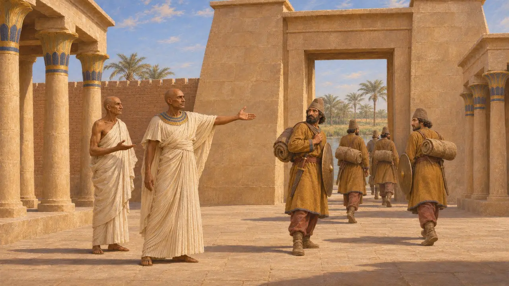
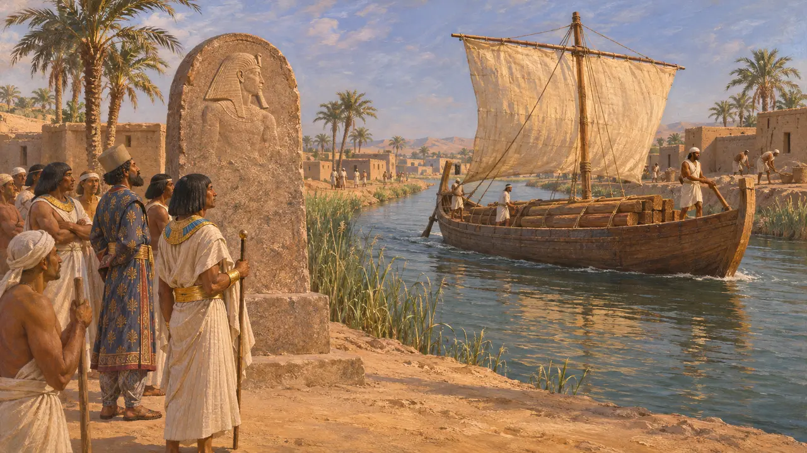
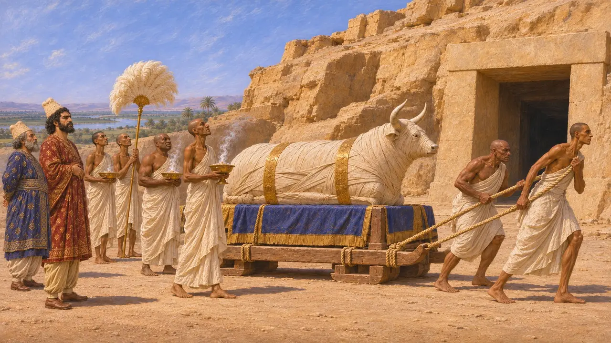
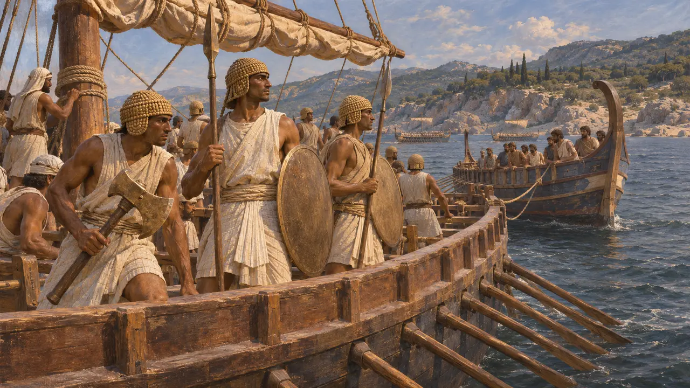
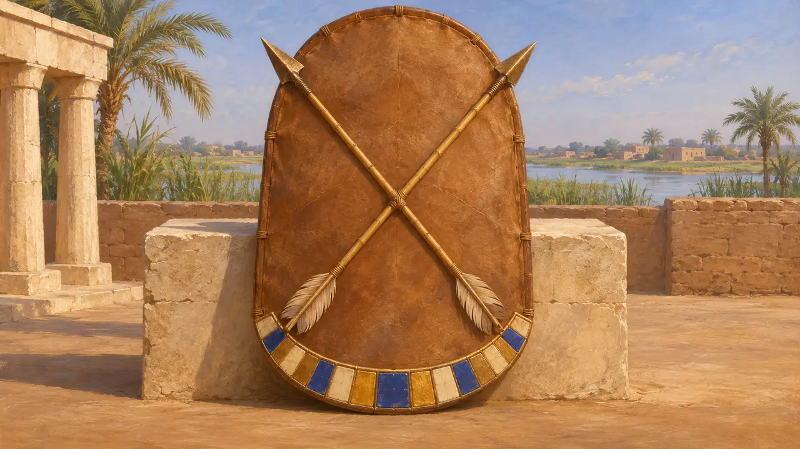

مصریان
مردم درهٔ نیل، زیر فرمان شاهان پارسی از 525 پ.م.
در بازی: مرحلهٔ ۲: نیزهبردار، مرحلهٔ ۵: منشور
مصریان در کرانهٔ نیل و زیر فرمان فرعونان دودمان سائیسی میزیستند تا آنکه کمبوجیه در سال 525 پ.م. آنان را گشود. از آن پس مصر یکی از ثروتمندترین ایالتهای شاهنشاهی شد. کاهنان، دبیران، صنعتگران و دریانوردانش در خدمت شاهان پارسی بودند که در آنجا در مقام فرعون فرمان میراندند. این سرزمین بیش از یک بار نیز شورید، نخستین بار حدود سال 486 پ.م.
در بازی: بازی مصر را شریک تجاری، سپاه پسامتیک سوم را مدافع ممفیس در 525 پ.م.، و رزمندگان دریایی مصری را در ناوگان شاه نشان میدهد. هرودوت نبرد اصلی را در پلوزیوم میداند و میگوید ممفیس پس از آن با محاصره گشوده شد.

فتح سال 525 پ.م.
روایت باستانیکمبوجیه در سال 525 پ.م. به مصر لشکر کشید. هرودوت میگوید متحدان عرب برای سپاه او در بیابان آب بردند، و فانس، مزدور یونانیای که از مصر گریخته بود، او را رایزنی داد. مصریان به فرماندهی پسامتیک سوم، که تنها حدود شش ماه پادشاهی کرده بود، در پلوزیوم شکست خوردند و به ممفیس گریختند که پس از محاصرهای سقوط کرد. پسامتیک زنده اسیر شد و بعدها به جرم توطئه کشته شد.
Herodotus 3.4-15

مصریان در خدمت کمبوجیه
در اسنادتندیس کتیبهدار اوجاهورسنه از آنِ فرماندهی دریایی در روزگار واپسین شاهان سایسی بود. در آن آمده است که او پزشک بزرگ کمبوجیه بود، نام شاهانهٔ مصریاش را ترتیب داد و فرمان داد سپاهیان بیگانه را از معبد نیت در سائیس بیرون کنند. او میافزاید که داریوش بعدها او را به مصر بازفرستاد تا خانهٔ زندگی، یعنی آموزشگاه دبیران معبد، را از نو برپا کند. لوحی سنگی از سراپئوم گواهی میدهد که در سال ششم کمبوجیه گاو آپیس با آیینهای شاهانه به خاک سپرده شد.
Statue of Udjahorresnet (Vatican Museums); Apis stela of Cambyses' year 6, Serapeum of Saqqara

داریوش در مقام فرعون
در اسنادداریوش در مصر در جایگاه فرعون نمایانده شد. سنگنبشتههایی که در امتداد آبراههٔ میان نیل و دریای سرخ برپا شدند گواهی میدهند که او فرمان به کندن آن داد و کشتیهایی از راه آن به سوی پارس فرستاد. تندیس او که در شوش یافت شد از سنگی مصری تراشیده شده و نگارههای هیروگلیف و فهرستی از مردمان فرمانبر بر آن نقش بسته است. منشور شوش او، مصریان را در شمار زرگران، درودگران و آرایشگران دیوارهایی میآورد که کاخش را ساختند.
DZc; DSab; DSf

جنون کمبوجیه
مورد مناقشههرودوت میگوید کمبوجیه دیوانه شد، گاو آپیس را با خنجر زد و خدایان مصری را به ریشخند گرفت. سنگنبشتههای آپیس با این داستان چندان سازگار نیستند: در دوران فرمانروایی او گاوی با همهٔ آیینها به خاک سپرده شد و جانشینش تا دوران داریوش زنده ماند. بسیاری از تاریخنگاران بر این باورند که این داستان از کاهنانی برخاست که از کاستن درآمدهای معابد به دست او خشمگین بودند، اقدامی که در متنی دموتیک از دورهای بعدتر آمده است. دیگران میپذیرند که فرمانروایی او از فرمانروایی داریوش سختگیرانهتر بود.
Herodotus 3.27-38; P. Briant, From Cyrus to Alexander, 2002

شورش و ناوگان خشایارشا
روایت باستانیهرودوت میگوید مصر در اواخر پادشاهی داریوش شورید و خشایارشا شورش را درهم کوبید و برادرش هخامنش را به فرمانداری آنجا گماشت. او در ناوگان سال 480 پ.م. شمار کشتیهای مصری را 200 میداند که ملوانانشان کلاهخودهای بافته بر سر داشتند و سپرهایی با لبههای پهن، نیزههای دریایی و تبرهای سنگین با خود میبردند. به روایت او، مصریان در آرتمیسیون بهترین جنگاوران دریایی شاه بودند و پنج کشتی یونانی را به چنگ آوردند، و رزمندگان دریاییشان بعدها برای نبرد در پلاته پیاده شدند.
Herodotus 7.1, 7.7, 7.89, 8.17, 9.32

نشانِ کنار نام
در اسنادنشان مصر در بازی سپر و تیرهای چلیپاییِ نیت، ایزدبانوی سائیس، زادگاه دودمان سائیسیِ پسامتیک، بر حاشیهای از بلوکهای گردنآویز است. سپاهیان مصر پشت درفشهای خدایان و نومها راه میسپردند؛ این نشانی برگرفته از نیت است، نه درفش میدانیِ شناختهشده.
R. H. Wilkinson, The Complete Gods and Goddesses of Ancient Egypt, 2003
منابع
- Herodotus, Histories, books 3 and 7-9
- Statue of Udjahorresnet (Vatican Museums)
- Apis stelae from the Serapeum of Saqqara
- DZc; DSab; DSf
- P. Briant, From Cyrus to Alexander, 2002
- G. Posener, La première domination perse en Égypte, 1936